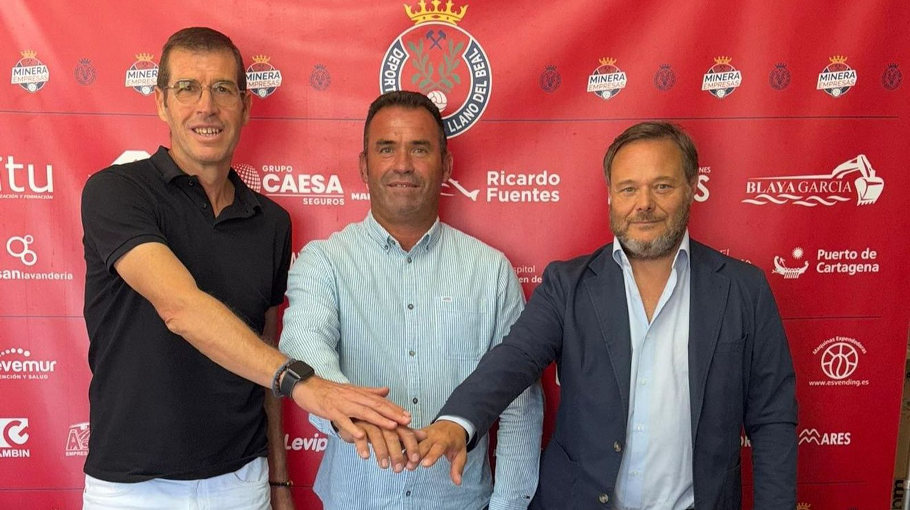

El Grupo García-Delgado vende su participación en la Minera y pone la mirada en el Xerez CD

Foto: CD MineraCarlos García-Delgado abandona su cargo en el conjunto murciano por incompatibilidades de agenda y personales, y mantiene un primer contacto con la directiva azulina para sondear la realidad del club y sus intenciones de futuro, según informa Manuela Romero en Diario de Jerez
La firma jerezana García-Delgado se hizo el pasado verano con el control accionarial de la Deportiva Minera, operación que compartió junto al inversor serbio Micho, uno de sus socios en aquel proyecto. Ahora, sin embargo, el empresariado xerecista ha decidido desvincularse por completo de la entidad murciana, cediendo el total de su paquete accionarial al citado inversor balcánico.
El conjunto del Llano del Beal compitió la temporada pasada en el Grupo 4 de Segunda RFEF, la misma categoría en la que se enmarcaron tanto el Xerez CD como el Xerez DFC, rozando entonces el billete a Primera RFEF bajo las órdenes de José Carlos Checa. En el presente curso, no obstante, la Minera ha sido reubicada en el Grupo 3, por lo que sus caminos ya no se cruzarán con los del conjunto jerezano, que permanece en el Grupo 4.
Salida por incompatibilidad de agenda
Carlos García-Delgado, quien desempeñaba las funciones de máximo responsable ejecutivo del club murciano junto a José Blaya como máximo mandatario institucional, ha decidido apartarse del proyecto alegando razones profesionales y de índole particular, al no poder seguir compaginando sus múltiples ocupaciones con los constantes desplazamientos semanales hasta tierras murcianas.
Su marcha coincide en el tiempo con la de Quique Romero, quien también desempeñaba labores de asesoramiento tanto a la presidencia como al área deportiva de la entidad, ejerciendo como responsable institucional.
Un acuerdo hecho público por la propia empresa
Fue la propia compañía jerezana la encargada de comunicar estos movimientos corporativos a través de su portal digital, donde confirma que se ha cerrado "un acuerdo estratégico para la venta de la totalidad de sus participaciones del Club Deportivo Minera a la firma inversora Terval eim Holding".
En el mismo escrito, la entidad jerezana desliza también que su máximo representante mantuvo recientemente un encuentro con responsables del Xerez CD, con el objetivo de "explorar y poder iniciar una nueva etapa en el club de su ciudad", una frase que abre la puerta a una posible implicación futura en la entidad azulina. La compañía llega incluso a apuntar que este acercamiento podría suponer "el inicio de una etapa clave para la estabilidad institucional" del conjunto xerecista.
La cautelosa respuesta del Xerez CD
Desde las oficinas del Xerez CD no se ha negado el encuentro, aunque sí se ha querido restar trascendencia inmediata al mismo. Fuentes del club confirman la cita mantenida con el empresario jerezano y matizan su alcance con un mensaje prudente: "Hemos oído la propuesta y sus pretensiones. Oímos a todos los empresarios que llaman a nuestra puerta, no se la cerramos a nadie", una declaración que deja la puerta entreabierta sin comprometer, por el momento, ningún tipo de acuerdo o negociación formal.
🇬🇧 Read in English ← Volver a la portada